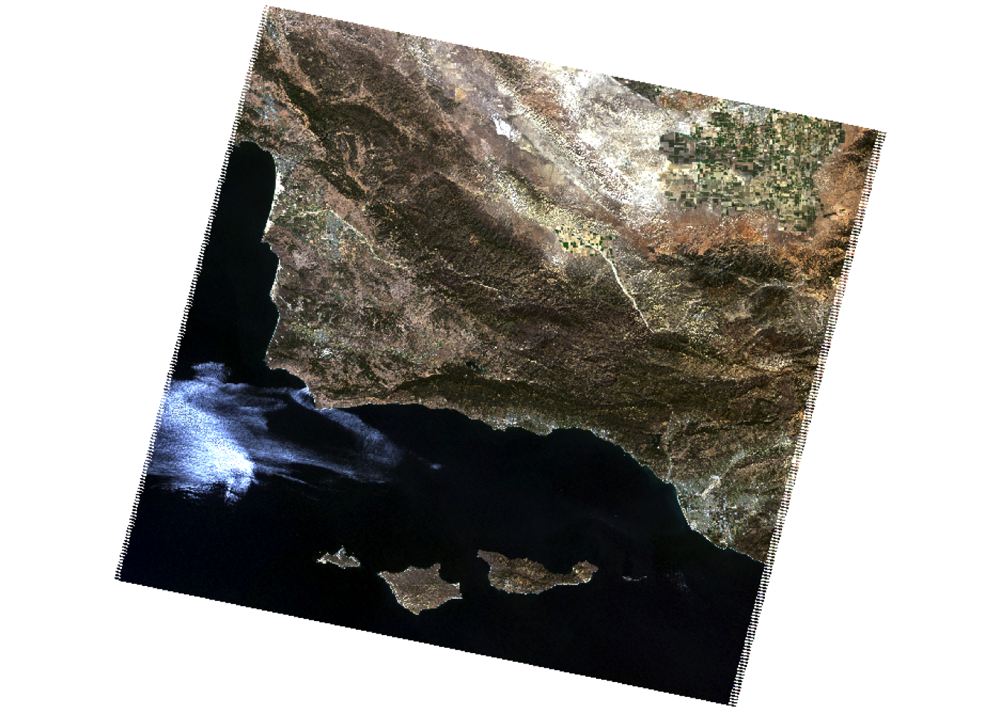
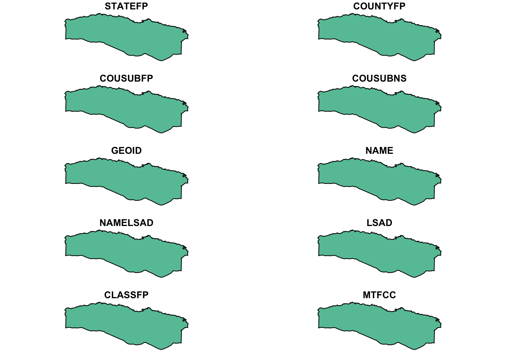
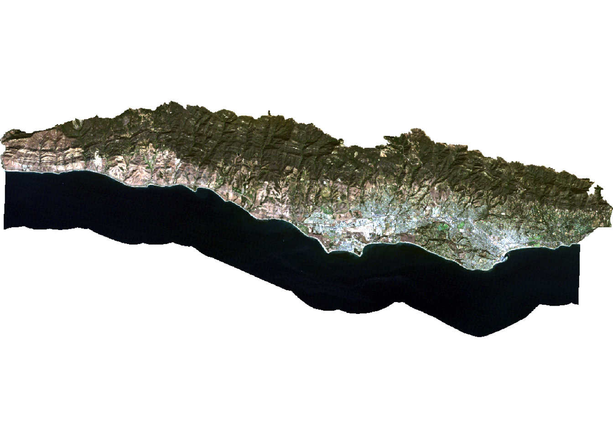
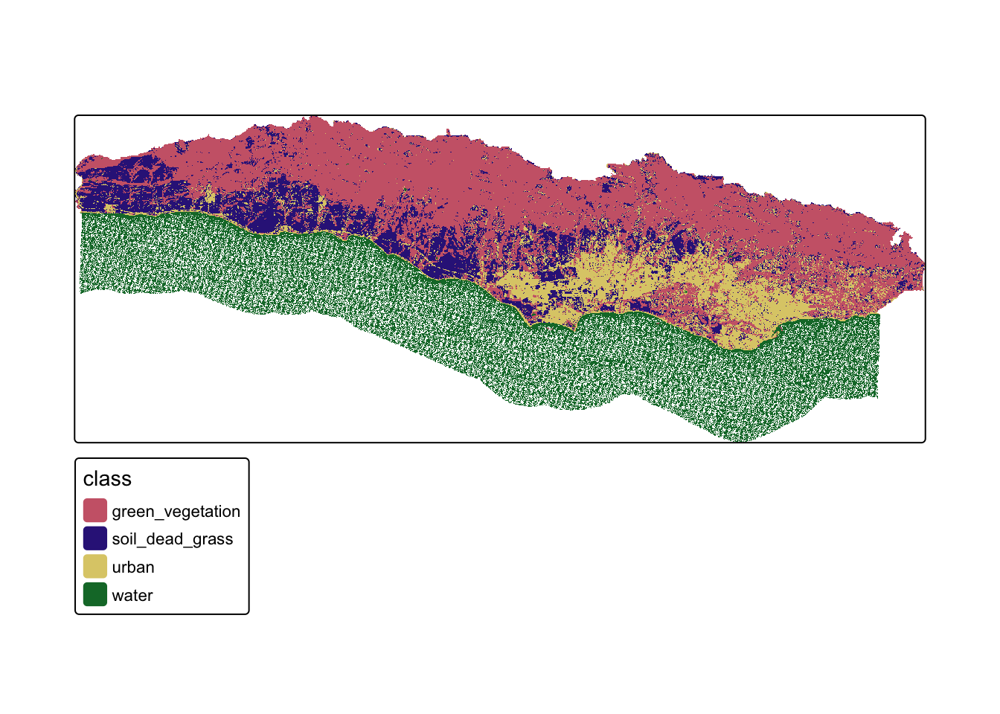

Code
library(sf)
library(terra)
library(here)
library(dplyr)
library(rpart)
library(rpart.plot) # package to plot
library(tmap)
library(here)
here::i_am("index.qmd")
setwd(here())The distribution and changes in the land cover types are important indicators of the health of the ecosystem. They can help us better understand the impact of climate change, natural disasters, urbanization, and deforestation on the surrounding environment. Remotely sensed imagery collect the information about the land cover and enable us to monitor and analyse the changes over large areas.
There are several way to classify raw remotely sensed imagery into landcover classes: - supervised approaches use training data labeled by the user;
- unsupervised approaches use algorithms to create groups which are identified by the user afterward.
credit: this project is based on the materials developed by Chris Kibler and Ruth Oliver.
In this project we created a land cover classification for southern Santa Barbara County using a form of supervised classification, a decision tree classifier Decision trees.
To do so we classified pixels using a series of conditions based on values in spectral bands. These conditions (or decisions) were developed based on training data using multi-spectral imagery and data on the location of 4 land cover types:
Landsat 5 Thematic Mapper
Study area and training data
I used the following libraries throughout the analysis:
library(sf)
library(terra)
library(here)
library(dplyr)
library(rpart)
library(rpart.plot) # package to plot
library(tmap)
library(here)
here::i_am("index.qmd")
setwd(here())As first step in the analysis, I imported and combined Landsat data (e.g. B1.tif) into a raster stack. For this analysis I worked with the following five bands: - Blue
- Green
- Red
- Near Infrared (NIR)
- Short-Wave Infrared 1 (SWIR1)
- Short-Wave Infrared 2 (SWIR2)
Each band uses a different wavelengths to collect the data about an object. Analysing multiple bands simultaneously allows for a higher level of detail, enabling the classification of distinct land cover types with higher precision.
# list files for each band, including the full file path
filelist <- list.files("./data/landsat-data", full.names = TRUE)
filelist[1] "./data/landsat-data/LT05_L2SP_042036_20070925_20200829_02_T1_SR_B1.TIF"
[2] "./data/landsat-data/LT05_L2SP_042036_20070925_20200829_02_T1_SR_B2.TIF"
[3] "./data/landsat-data/LT05_L2SP_042036_20070925_20200829_02_T1_SR_B3.TIF"
[4] "./data/landsat-data/LT05_L2SP_042036_20070925_20200829_02_T1_SR_B4.TIF"
[5] "./data/landsat-data/LT05_L2SP_042036_20070925_20200829_02_T1_SR_B5.TIF"
[6] "./data/landsat-data/LT05_L2SP_042036_20070925_20200829_02_T1_SR_B7.TIF"# read in and store as a raster stack
landsat <- rast(filelist) %>%
setNames(c('blue', 'green', 'red', 'NIR', 'SWIR1', 'SWIR2')) # look up names of each band in the landsat documentation
landsatclass : SpatRaster
dimensions : 7251, 8111, 6 (nrow, ncol, nlyr)
resolution : 30, 30 (x, y)
extent : 115485, 358815, 3724485, 3942015 (xmin, xmax, ymin, ymax)
coord. ref. : WGS 84 / UTM zone 11N (EPSG:32611)
sources : LT05_L2SP_042036_20070925_20200829_02_T1_SR_B1.TIF
LT05_L2SP_042036_20070925_20200829_02_T1_SR_B2.TIF
LT05_L2SP_042036_20070925_20200829_02_T1_SR_B3.TIF
... and 3 more source(s)
names : blue, green, red, NIR, SWIR1, SWIR2 # update layer names to match a band
plotRGB(landsat, r = 3, g = 2, b =1, stretch = 'lin') # a stretch parameter allows to optimize the distribution
Since I was focusing on south Santa Barbara county, I cropped the landsat raster stack to the boundaries of the study area.

Working with satelite data and decision trees is power intensive and requires a lot of resources. It is advisable to reduce the dataset by removing unnecessary datapoints to improve the computational time.
# crop Landsat scene to the extent of the SB county shapefile
landsat_cropped <- crop(landsat, sb_county_south)
# mask the raster to southern portion of SB county
landsat_masked <- mask(landsat_cropped, sb_county_south)
# remove unnecessary object from environment [Best Practice tip]
rm(landsat, landsat_cropped, sb_county_south)
plotRGB(landsat_masked, r=3, g=2, b=1, stretch= "lin")
When working with remote sensing datasets that were collected across different dates and atmospheric conditions, we need to convert the raw raster values to reflectance. This ensures radiometric consistency across all datasets and helps correct for atmospheric effects, such as scattering and absorption. Reflectance represents the proportion of incoming solar radiation that is reflected by the Earth’s surface. This allows us to conduct a quantitative analysis, such as calculating vegetation indices required for land cover classification and monitoring.
In order to convert the values in the raster stack to correspond to reflectance values I removed erroneous values and applied scaling factors to convert to reflectance.
The valid range of pixel values for Landsat Collection 2 is 7,273-43,636, with a multiplicative scale factor of 0.0000275 and an additive scale factor of -0.2.
I updated the values for each pixel based on the above scaling factors and set erroneous values to NA.
# reclassify erroneous values as NA (e.g. values outside the valid range 7,273-43,636)
rcl <- matrix(c(-Inf, 7273, NA,
43636, Inf, NA),
ncol = 3, byrow = TRUE)
landsat <- classify(landsat_masked, rcl = rcl)
# adjust values based on scaling factor to turn the raster into reflectance percentages
# 0.0000275 is the multiplicative scale factor provided by USGS
# -0.2 negative additive factor
landsat<- (landsat * 0.0000275 - 0.2)*100
# confirm all pixel values range from 0-100%.
summary(landsat)Warning: [summary] used a sample blue green red NIR
Min. : 1.11 Min. : 0.74 Min. : 0.00 Min. : 0.23
1st Qu.: 2.49 1st Qu.: 2.17 1st Qu.: 1.08 1st Qu.: 0.75
Median : 3.06 Median : 4.59 Median : 4.45 Median :14.39
Mean : 3.83 Mean : 5.02 Mean : 4.92 Mean :11.52
3rd Qu.: 4.63 3rd Qu.: 6.76 3rd Qu.: 7.40 3rd Qu.:19.34
Max. :39.42 Max. :53.32 Max. :56.68 Max. :57.08
NA's :39856 NA's :39855 NA's :39855 NA's :39856
SWIR1 SWIR2
Min. : 0.10 Min. : 0.20
1st Qu.: 0.41 1st Qu.: 0.60
Median :13.43 Median : 8.15
Mean :11.88 Mean : 8.52
3rd Qu.:18.70 3rd Qu.:13.07
Max. :49.13 Max. :48.07
NA's :42892 NA's :46809 To train the data, I used a shapefile that classifies different locations in the study area into one of four land cover types. Subsequently, I extracted spectral values at each site to create a data frame establishing the relationship between land cover types and their corresponding spectral reflectance.
# read in and transform training data
training_data <- st_read("data/trainingdata.shp") %>%
st_transform(., crs = st_crs(landsat))Reading layer `trainingdata' from data source
`/Users/oksi/workspace/sb-land_cover-decision_tree/data/trainingdata.shp'
using driver `ESRI Shapefile'
Simple feature collection with 40 features and 2 fields
Geometry type: POLYGON
Dimension: XY
Bounding box: xmin: 215539.2 ymin: 3808948 xmax: 259927.3 ymax: 3823134
Projected CRS: WGS 84 / UTM zone 11N# extract reflectance values at training sites
training_data_values <- extract(landsat, training_data, df = TRUE)
# convert training data to data frame
training_data_attributes <- training_data %>%
st_drop_geometry()
# join training data attributes and extracted reflectance values
sb_training_data <- left_join(training_data_values, training_data_attributes,
by = c("ID"="id")) %>%
mutate(type = as.factor(type))
head(sb_training_data) ID blue green red NIR SWIR1 SWIR2 type
1 1 3.91675 4.69225 5.09650 19.41575 17.12775 9.28200 green_vegetation
2 1 3.71875 5.92700 5.09925 19.41300 16.86375 10.79175 green_vegetation
3 1 3.29800 5.09375 5.42375 18.64300 17.66400 10.41500 green_vegetation
4 1 3.70775 5.09650 5.75650 19.03075 17.66125 10.79175 green_vegetation
5 1 3.71050 5.92150 5.42650 19.02800 18.45600 10.41225 green_vegetation
6 1 3.91675 5.09925 5.42925 17.86200 16.86650 10.79175 green_vegetationThere different models that can be applied to train a decision tree. In this analysis I used rpart function which implements the CART algorithm.
The decision tree is comprised of a hierarchy of binary decisions. Each decision rule has 2 outcomes based on a conditional statement pertaining to values in each spectral band.
It’s usually very helpful and informative to visualize the decision tree before applying to the actual dataset.
# establish model formula
sb_formula <- type ~ red + green + blue + NIR + SWIR1 + SWIR2
# train decision tree
sb_decision_tree <- rpart(formula = sb_formula,
data = sb_training_data,
method = "class",
na.action = na.omit)
# plot decision tree
prp(sb_decision_tree)
Finally, I applied the decision tree to the entire image, using a predict() function from terra package.
The names of the layers need to match the column names of the predictors used to train a decision tree.
The predict() function returns a raster layer with integer values, that correspond to the factor levels in the training data. I relied on the levels of the training data to understand what category each integer corresponds to.
# classify image based on decision tree
sb_classfication <- predict(landsat, sb_decision_tree, type = "class", na.rm = TRUE) #
# inspect level to understand the order of classes in prediction
levels(sb_classfication)[[1]]
value class
1 1 green_vegetation
2 2 soil_dead_grass
3 3 urban
4 4 waterNow, I can generate a land cover map of southern Santa Barbara County using the predicted results:
